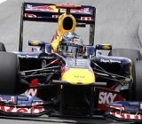

Vettel compara su carrera con la de Senna en 1991

POR SU PROBLEMA CON LA CAJA DE CAMBIOS
Sebastian Vettel comparó su resultado en el Gran Premio de Brasil, donde fue segundo,
con el triunfo del legendario Ayrton Senna en esta misma carrera en 1991, también con problemas
en el cambio de su bólido durante casi toda la prueba.
"Cuando me avisaron por radio del problema tuve que bajar la potencia del motor y limitar el uso del cambio.
Tuve que usar marchas largas e todas partes y ahí es cuando me vino a la mente la comparación (con Senna)",
dijo el germano. Vettel, ganador de once carreras y quince 'poles' tras ganar su segundo título consecutivo,
dijo que lo de hoy "no puede llamarse mala suerte".
"Si algo así pasa, no está en tus manos", dijo.